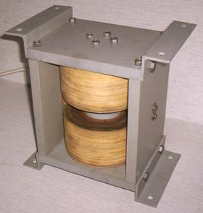
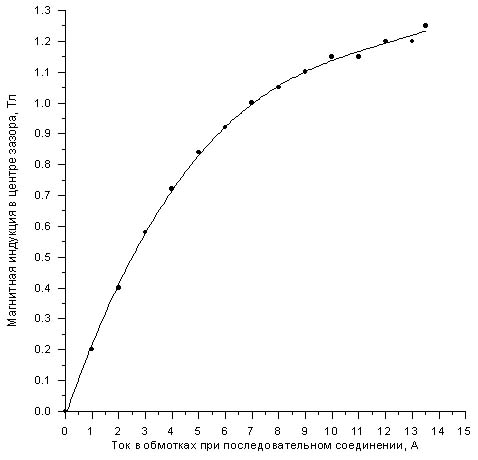
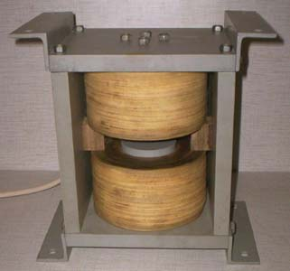
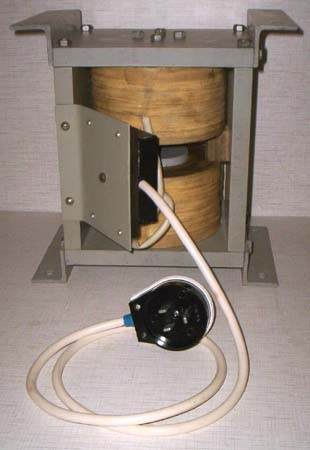
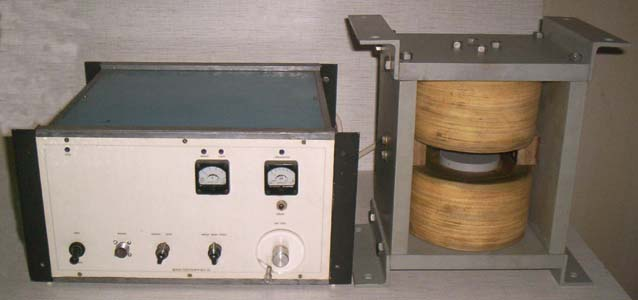

Электромагнит для
получения постоянного однородного магнитного
поля с индукцией до 1.2 Тл в зазоре диаметром 80 мм высотой 20 мм

Назначение
Электромагнит предназначен для получения постоянного
однородного магнитного поля с возможностью регулировки по величине индукции
посредством изменения тока в обмотках [10]. Он может быть использован для
намагничивания постоянных магнитов, изучения магнитных свойств веществ при
работе в составе магнитометров, калибровки приборов для измерения магнитных
полей, например, тесламетров [8], проведения экспериментов, требующих применения
магнитного поля, и т. п.
Технические данные:
- размер рабочей зоны электромагнита: диаметр 80 мм,
межполюсной зазор 20 мм
- величина индукции магнитного поля в центре зазора 1 Тл
при токе 7 А, 1.25 Тл при токе 13.5 А (зависимость магнитной индукции в
центре зазора от величины тока в обмотках при их последовательном соединении
показана на рис. 1)
- режим работы непрерывный при токе до 2 А,
повторно-кратковременный при токе до 15 А
- неоднородность индукции магнитного поля в рабочей зоне не
более 5 % (при среднем значении магнитной индукции в зазоре 0.5 Тл)
- габаритные размеры не более 315 х 310 х 270 мм3
- масса электромагнита в сборе не более 55 кг

Рис. 1. Зависимость магнитной индукции в центре рабочего
зазора электромагнита от величины тока в обмотках при их последовательном
соединении.
Конструкция
Магнитная система электромагнита (ярмо) собрана из четырех
стальных плит: верхняя, нижняя и две боковых (рис. 2). К верхним плитам крепятся
цилиндрические стальные сердечники. На сердечники надеты катушки, намотанные
медным проводом. Между катушками установлены немагнитные распорки. Конструкция
устанавливается на опорные уголки в вертикальном или горизонтальном положении
(рис. 2, 3), чтобы обеспечить удобство в работе. Сзади установлена клеммная
коробка, посредством которой выводы катушек подключаются к питающему кабелю
(рис. 4).

Рис. 2. Вертикальная установка электромагнита.

Рис. 3. Горизонтальная установка электромагнита.

Рис. 4. Электромагнит: вид сзади.
Источники питания
Для возбуждения тока в обмотках электромагнита могут
применяться различные блоки питания [10], обеспечивающие на выходе как
регулируемое [1, 5], так и нерегулируемое [6, 7] постоянное напряжение.
Применение специально разработанного для электромагнитов регулируемого блока
питания [1] позволяет получать магнитное поле, индукция которого может
изменяться как по величине (от нуля до максимума), так и по направлению (рис.
5). Электромагнит может быть также использован для получения импульсных
магнитных полей совместно с генераторами мощных импульсов тока [2 - 4] и
переменных низкочастотных (единицы герц) магнитных полей с генератором Г3-118 и
усилителем мощности [9]. Для контроля величины магнитной индукции в рабочем
зазоре электромагнита можно использовать тесламетр
[8].

Рис. 5. Электромагнит с блоком питания.
Ссылки:
- Блок питания электромагнита
регулируемый
- Генератор мощных
импульсов тока однополярный
- Генератор мощных
импульсов тока биполярный
- Генератор мощных импульсов
тока (емкостной накопитель энергии)
- Импульсный
регулируемый блок питания 0 ... -50 В с максимальным выходным током до 20 А
и двухканальным внешним управлением
- Источник питания
повышенной мощности напряжением 12.6 В (замена аккумуляторной батареи)
- Макет
источника питания постоянного напряжения +300 В с выходным током до 16 А
- Приборы для
измерения магнитных полей
- Усилитель
мощности низкой частоты для генератора сигналов Г3-118
-
Электромагниты. Источники питания электромагнитов
Словарь
терминов:
- Генератор импульсов - прибор или устройство для
создания последовательности импульсов.
- Магнитная индукция - вектор, численно
равный пределу отношения силы, действующей со стороны магнитного поля на
элемент проводника с электрическим током, к произведению тока и длины
элемента проводника, если длина этого элемента стремится к нулю, а элемент
так расположен в поле, что этот предел имеет наибольшее значение, и
направленный перпендикулярно к направлению элемента проводника и к
направлению силы, действующей на этот элемент со стороны магнитного поля,
причем из его конца вращение по кратчайшему расстоянию от направления силы к
направлению тока в элементе проводника должно быть видно происходящим против
часовой стрелки.
- Магнитометр - прибор для магнитных
измерений.
- Намагничивание
- воздействие на образец магнитным полем, вследствие которого у образца
появляется отличная от нуля остаточная намагниченность.
- Однородное магнитное поле - магнитное
поле, в каждой точке которого вектор магнитной индукции имеет одни и те же
направление и величину.
- Постоянный магнит
- объект, создающий магнитное поле за счет собственных внутренних
элементарных электрических токов, текущих без использования внешнего
источника энергии в составляющем объект материале.
- Тесламетр (гауссметр) - прибор для
измерения магнитной индукции.
- Электромагнит
- устройство, содержащее катушку индуктивности и магнитный контур
(цепь).
29.08.2012
21.06.2018
Альтернативные источники
энергии
Компьютеры и
Интернет
Магнитные поля
Механотронные системы
Перспективные
разработки
Электроника и
технология
Главная страница